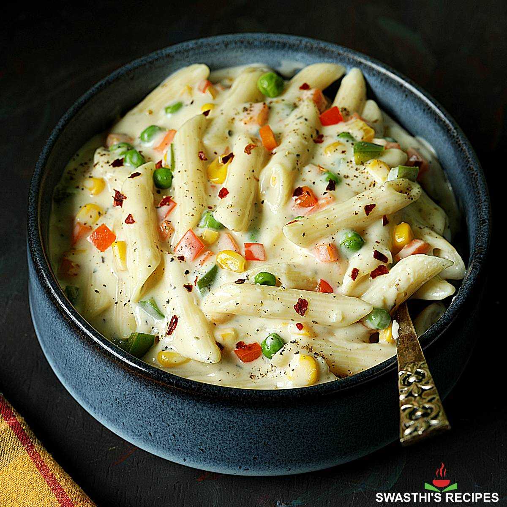

White Pasta

Description
A creamy and comforting pasta dish made with a white sauce (béchamel sauce), vegetables, and cheese.
Ingredients
- Pasta (penne, macaroni, or other shapes)
- Butter
- Flour
- Milk
- Vegetables (broccoli, mushrooms, peas, etc.)
- Cheese (parmesan, mozzarella, or a blend)
- Salt and pepper
- Herbs (oregano, basil, thyme)
Steps
- Cook the pasta: Bring a pot of salted water to a boil and cook the pasta according to package directions.
- Make the white sauce: Melt butter in a saucepan, whisk in flour, and cook for a minute. Gradually whisk in milk, stirring constantly until the sauce thickens.
- Sauté vegetables: Cook the vegetables in a separate pan until tender-crisp.
- Combine: Add the cooked pasta, vegetables, cheese, salt, pepper, and herbs to the white sauce. Stir until well combined and the cheese is melted.
- Serve: Garnish with additional cheese and fresh herbs, if desired.
Back Home